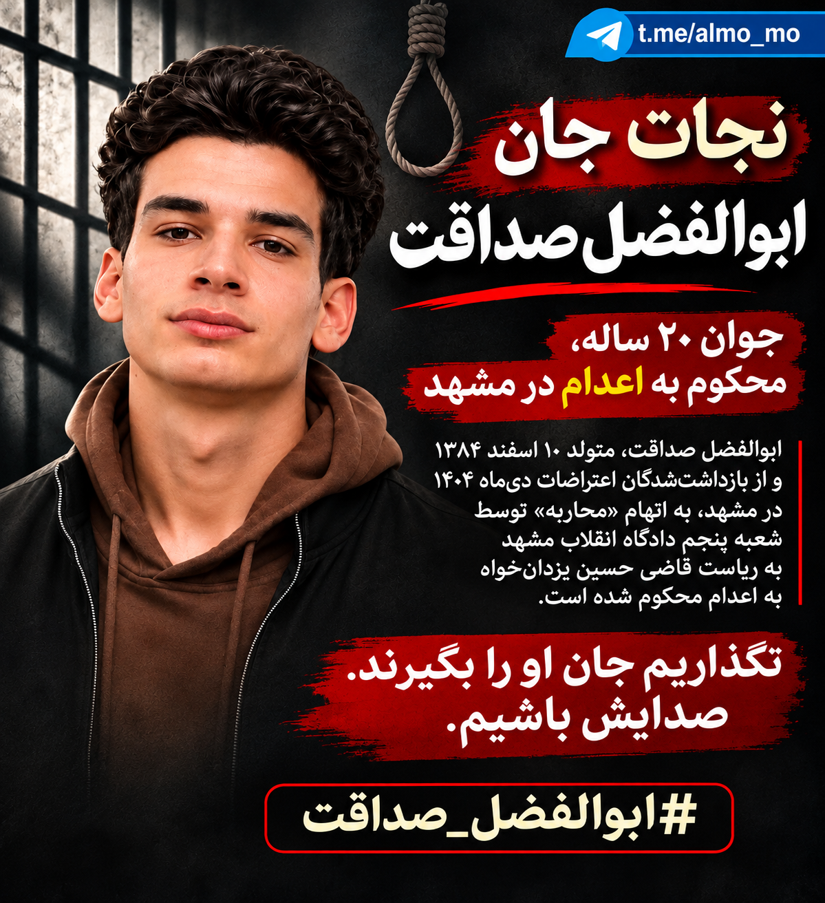
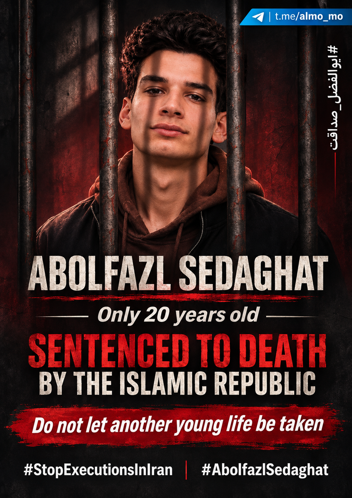
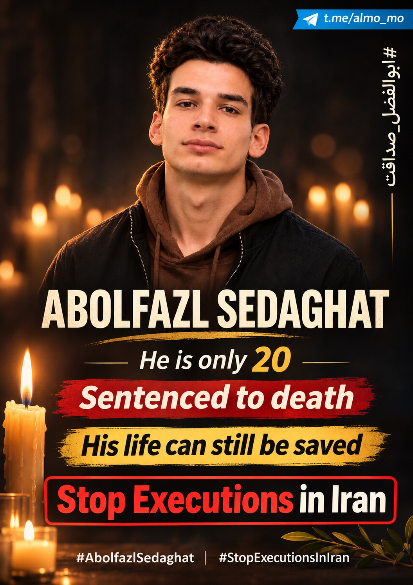
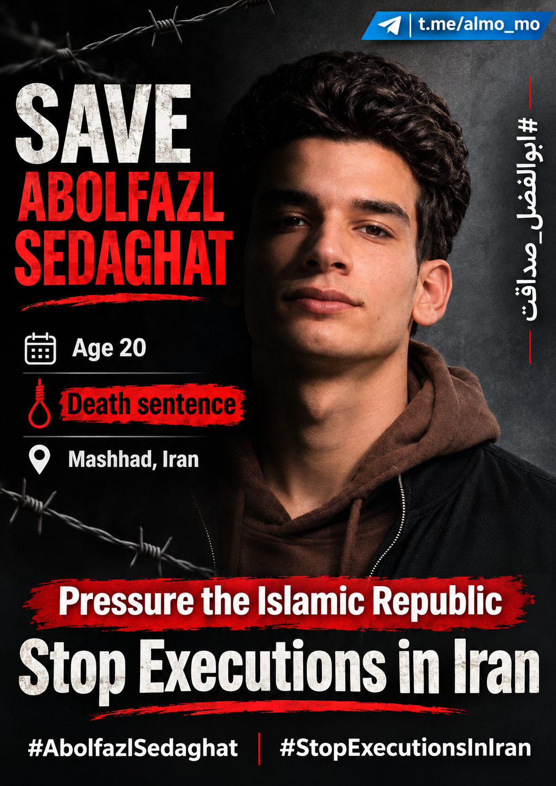
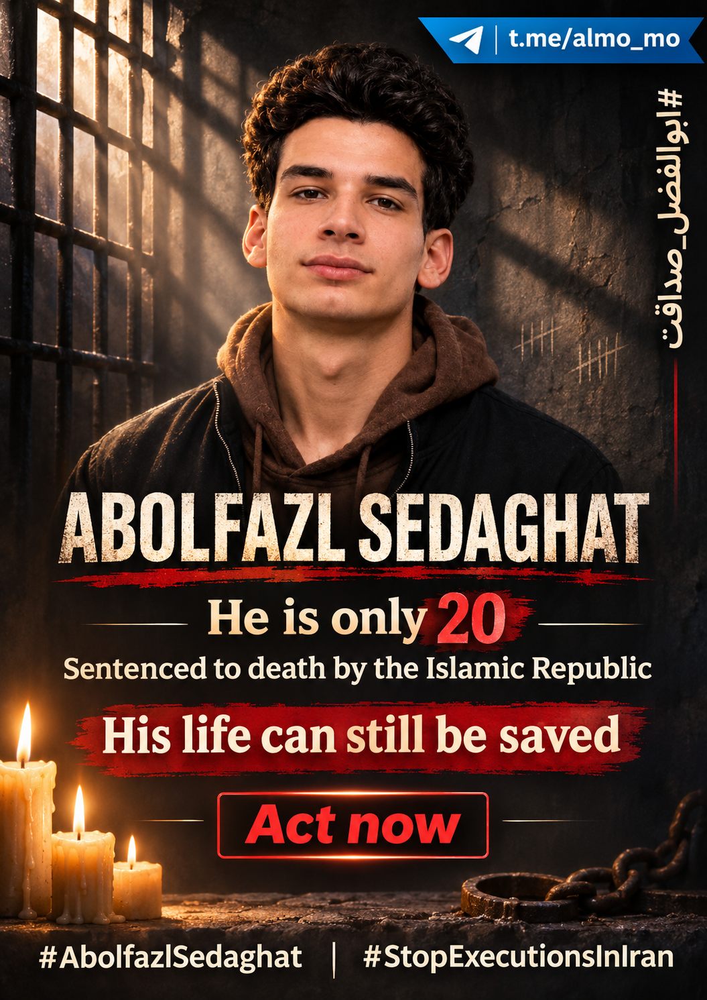
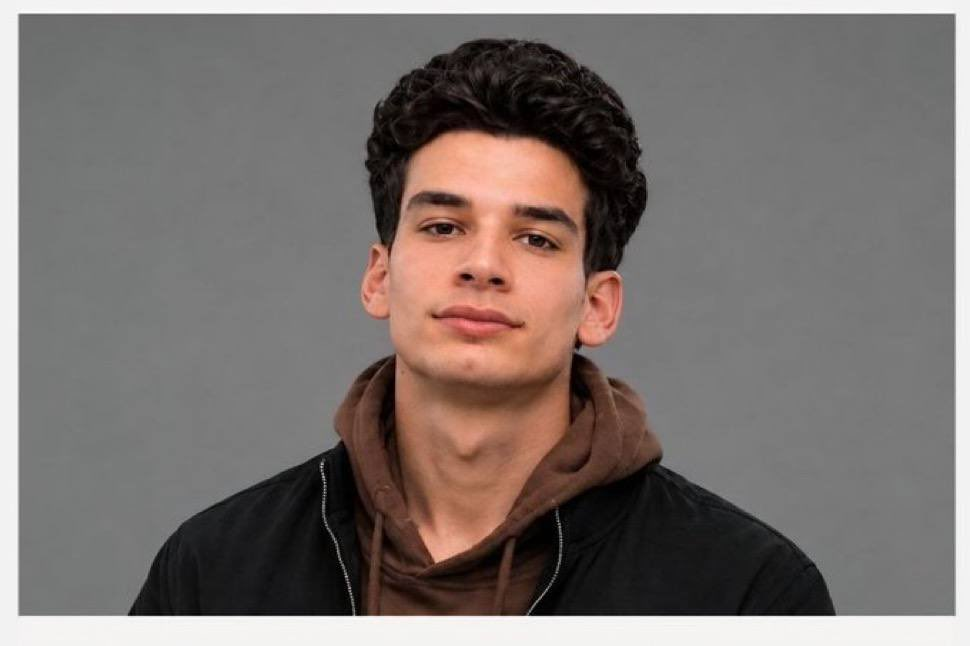
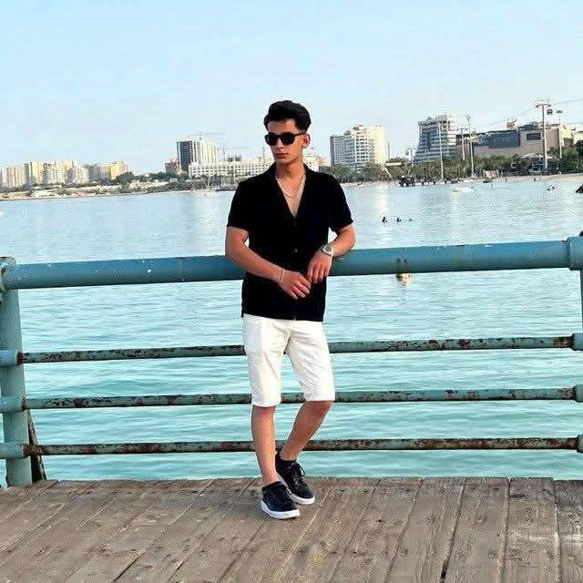
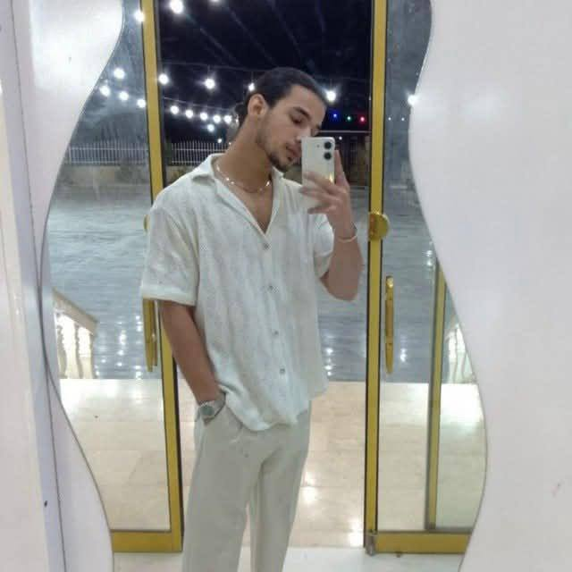

در حال بارگذاری…

⬇ دریافت پوستر اصلی فارسیابوالفضل صداقت، جوان ۲۰ ساله (متولد ۱۰ اسفند ۱۳۸۴)، از بازداشتشدگان مرتبط با اعتراضات دیماه ۱۴۰۴ در مشهد است. به گزارش هرانا، او در پروندهای مشترک با متین فرنیان و وحید خدریخواه توسط شعبه پنجم دادگاه انقلاب مشهد به ریاست حسین یزدانخواه، بر اساس اتهام حکومتی «محاربه» به اعدام محکوم شده است. محل نگهداری گزارششده: زندان وکیلآباد مشهد.
خواستههای کارزار: توقف فوری هرگونه اقدام برای اعدام، لغو حکم مرگ، دسترسی مؤثر به وکیل انتخابی، بررسی مستقل نقض حقوق دادرسی و آزادی ابوالفضل صداقت.
گزارشهای حقوق بشری و رسانهای برای بررسی مستقل ادعاها، نه متنهای شبکه اجتماعی بهعنوان سند اثبات حکم.
هر پوستر جداگانه و با کیفیت اصلی قابل دریافت است. تصاویر طراحیشده با استفاده از عکس مرجعاند و عکس خبری مستقلی محسوب نمیشوند.

EN 02 · Download EN 03 · Download EN 04 · Download
EN 05 · Download EN 06 · Download
EN 07 · Download EN 08 · Download EN 09 · Download EN 10 · Download EN 11 · Download EN 12 · Download EN 13 · Download
EN 14 · Download EN 15 · Downloadیک پرتره قبلی و سه تصویر تازهارسالی؛ این تصاویر برخلاف پوسترهای گرافیکی بدون بازطراحی یا تغییر چهره حفظ شدهاند. تصویر سوم دونفره است و هویت فرد همراه در این صفحه مشخص نشده است.



برای مشاهده عکس با کیفیت اصلی روی آن بزنید، یا از گزینه «دریافت تصویر» استفاده کنید. این تصاویر توسط گرداننده کارزار ارسال شدهاند و راستیآزمایی مستقل هویت و منشأ آنها در این صفحه انجام نشده است.
هر متن ویژه پرونده ابوالفضل است. هر دسته جداگانه جستوجو، فیلتر، کپی و نشانهگذاری میشود؛ هیچ متن آمادهای بدون اقدام شما منتشر نمیشود.
در بخش عادی: ۴۰۰ پست مستقیم، ۳۰۰ ریپلای و ۳۰۰ کوتپست. در بخش پریمیوم: ۲۰۰ پست مستقیم، ۱۵۰ ریپلای و ۱۵۰ کوتپست.
ریپلای: دکمه «↩ پاسخ به پست اصلی در X» با استفاده از شناسه همان پست (in_reply_to) پنجره پاسخ را با متن آماده باز میکند؛ دیگر یک پست مستقل نیست. در صورت تغییر رفتار X، «مشاهده پست مبنا» را بزنید و از Reply خود X استفاده کنید.
کوتپست: دکمه «↪ کوت با پیوند پست اصلی در X» متن و نشانی دقیق پست مرجع را به X میفرستد. X ممکن است آن را بهصورت کوتپست توکار یا متن همراه لینک نمایش دهد؛ برای Quote واقعی و قطعی گزینه «مشاهده پست مبنا» را بزنید، متن را کپی کنید و از منوی Repost → Quote همان پست استفاده کنید.
۶۰٪ از ریپلایها به فهرست نخست و ۴۰٪ به فهرست دوم متصلاند. تمام کوتپستها به فهرست نخست متصلاند. فهرست نخست ۱۹ لینک داشت (شماره ۶ ارائه نشده بود). محتوای پستهای مرجع مستقلاً ارزیابی نشده؛ پیش از ارسال متن، تناسب آن را با پست مرجع بررسی کنید.